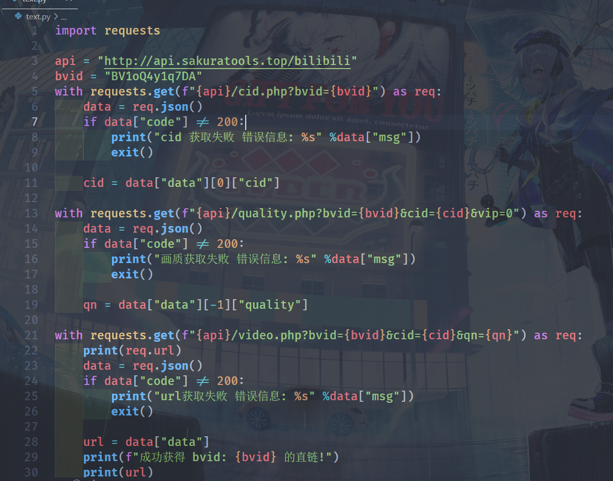

本站承诺完全使用本项目的开源代码，不会存储用户的任何信息。
{
"code": api 状态码
"msg": api 信息 错误时可以返回错误信息
}
code 错误码
200: api 请求成功(正常)
404: 不存在的 api
4000: 参数格式错误
4001: cookie 失效
4002: 第三方 api 错误
1.1 bilibili
以下接口需要请求时携带b站用户 cookie 才能获取1080画质
使用大会员可以获取更高画质
不携带 cookie 将以不登录情况下获取视频
获取视频 cid(如果有分p包括分p)
https://api.sakuratools.top/bilibili/cid.php
请求方式: GET/POST
请求参数:
bvid: 视频 bv 号
请求返回:
{
"code": api 状态码
"msg": api 信息 错误时可以返回错误信息
"data": {
{
"cid": 视频分p cid
"title" 视频分p标题
}
如有更多分p 全部以上格式返回
}
}
获取视频/分p清晰度
https://api.sakuratools.top/bilibili/quality.php
请求方式: GET/POST
请求参数:
bvid: 视频 bv 号
cid: 视频/分p cid号 (如果多分p, 填该分p cid)
vip: 用户会员等级, 不填自动获取, 如果知道携带该参数可以加快 api 响应
vip 支持的参数
0: 未登录, 如果只用低画质可以不带 cookie 并且 vip 填0不然会返回未登录
1: 普通用户, 可以获取1080P的画质, 不支持1080P+
2: 大会员, 可以获取1080P以上的画质, 包括4K
请求返回:
{
"code": api 状态码
"msg": api 信息 错误时可以返回错误信息
"data": {
根据当前会员状态与视频支持画质返回
这里只展示一下数据结构
{
display_desc: "480P" 当前画质
format: "flv480" 不明
new_description: "480P 清晰" 画质说明
quality: 32 画质码
superscript: "" 画质说明, 没啥用
}
}
}
获取视频直链
https://api.sakuratools.top/bilibili/video.php
请求方式: GET/POST
请求参数:
bvid: 视频 bv 号
cid: 视频/分p cid号 (如果多分p, 填该分p cid)
qn: 画质码
请求返回:
{
"code": api 状态码
"msg": api 信息 错误时可以返回错误信息
"data": [
三条直链 后两条为备用
]
}
python demo:
